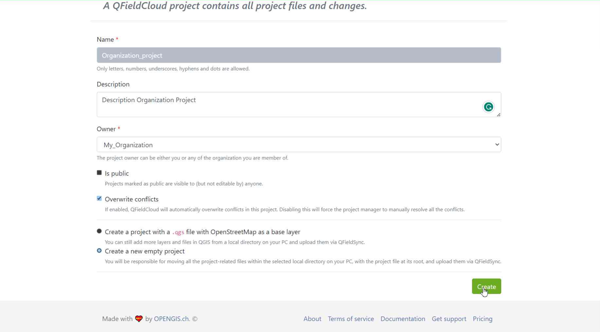

Guia de primeiros passos¶
Ajuda
Temos uma plataforma de discussão da comunidade para discutir suas perguntas, dúvidas e ideias. Não hesite em conferir.
Obter uma conta QFieldCloud¶
Preparação no Desktop
Vai à página de registo, insere a informação solicitada e criar uma nova conta no QFieldCloud.

Editar perfil¶
Altere as suas configurações pessoais. Adicione uma foto de perfil ou obtenha uma visão geral sobre suas permissões e associações nas organizações.
Billing¶
Adding billing information to the account is needed to use QFieldCloud Pro plan or Organization plan.
For a Pro plan, follow these steps :
- Click on the username up-right the page
- Click on "Upgrade to pro"
- In the "Subscription" section, click on "Upgrade"
- In Pro section, click on "Activate"
- Carefully read the "Terms of Service" and agree to the terms of service, then "Proceed"
- In the "Billing Address" section, fill up the form, and then click on "Proceed to payment"
For an Organization plan, follow these steps :
- Click on the username up-right the page
- Click on "Create organization"
- Click on "Create"
- Choose a name for your organization with only 150 characters or fewer, letters, digits, and @/./+/-/_
- Click on "Create"
- Choose how much storage is needed
- Carefully read the "Terms of Service"and agree to the terms of service, then "Proceed"
- In the "Billing Address" section, fill up the form, and then click on "Proceed to payment"
If the billing information is incomplete, at any time it is possible to finish filling up the form by going to Billing > Subscription > Finish checkout
All pricing information is available on the Pricing page.
Discontinuing Services in QFieldCloud¶
-
If you need to cancel your subscription on QFieldCloud: 1.1. For Pro plan accounts, click on your username, choose "Settings." 1.2. For Organization plan account, click on the name of your Organization, click on "Edit Organization". Note you need to be owner of that Organization.

-
Proceed to the "Billing" section, click on "Change".

-
Select "Cancel Subscription".

-
Confirm the cancellation in the subsequent pop-up window.

-
A Nyuki message will then appear, indicating that the subscription will conclude at the end of the current billing period.

Organizações¶
As suas organizações estão listadas aqui. Encontre mais sobre equipas, membros e os seus tipos em conceitos do Ecossistema QField.
Projetos¶
Pesquise e escolha um projeto na lista ou comece a criar um novo projeto.

Ligação do QFieldCloud no QGIS Desktop¶
Preparação no Desktop
Para se ligar ao QFieldCloud, precisa do Plugin “QFieldSync” no QGIS. As próximas etapas mostram como poderá instalar e sincronizar os dados de e para o QFieldCloud.
Instalar o QFieldSync¶
Abra o gestor de plugins do QGIS indo ao menu Plugins -> Gestão e instalação de plugins....
Encontre o QFieldSync na lista de plugins e instale a última versão clicando no botão Instalar Plugin.
Nota
Como o QFieldCloud ainda está em fase beta, há atualizações e correções frequentes. Atualize seu plugin QFieldSync com frequência. Em caso de problema, tente atualizar para a versão mais recente antes de reportar um erro.

Após a instalação bem-sucedida, uma nova barra de ferramentas aparecerá:

Login no QFieldCloud¶
Clique no ícone da nuvem na barra de ferramentas do QFieldSync. Um novo ecrã de início de sessão irá aparecer:

Introduza as suas credenciais criadas durante o seu registo de conta.
Note
If you use a password in QGIS for the first time, it will ask you to set a master password that manages all the other passwords used in QGIS. More information about the master password here: QGIS documentation
Explore the projects overview screen: your current user underlined and blue, a logout button down-left, a cloud button to create a new project and, on the right, a refresh button to grab the freshest project list. Newly registered users will see an empty table and as soon as they create new projects, the list will grow. The projects overview screen looks like this:
{kind=link}
The icons indicate the cloud and local status of the different projects.
Estado local
 indicates that there is only a remote cloud project existing.
indicates that the cloud project is also locally stored.
indicates that there is only a remote cloud project existing.
indicates that the cloud project is also locally stored.
Estado da Nuvem:
Red: status failed —> the project is invalid and is not understood by the cloud. The user needs to fix/upload their .qgs/.qgz project. Brown: status busy —> we are working on your project, please be patient. You cannot do much with the project in the meanwhile. Green: status ok —> the project is successfully undestood by the cloud. You can try to download on QField, but the success is not guaranteed.
The status of each project is shown with a tooltip.
By double-clicking on a project in the list, you can see and edit the specific project properties.

Change the default QFieldCloud server in QField and QField Sync¶
QField and QFieldSync connect to the QFieldCloud service on app.qfield.cloud by default.
You can modify the default QFieldCloud server QField and QFieldSync connect to:
- Open the login screen in QField or QFieldSync.
- Double-tap on the Nyuki icon (the blue bee QFieldCloud logo).
- This action will reveal a field where you can enter the preferred QFieldCloud server address.
- Enter the details of the desired server in the provided field. (Leaving the field empty will connect to the default QFieldCloud server at app.qfield.cloud.)


Note
It's important to note that QFieldSync does not support the same cloud project in multiple QGIS profiles. As a recommendation use a single QGIS profile for your QFieldCloud projects to avoid synchronization issues.
Crie e configure o seu projecto na Nuvem¶
Crie um novo projeto clicando no botão da cloud, no canto inferior esquerdo. Primeiro, precisará escolher como criar o novo projeto entre
- "Converta o projeto atualmente aberto em projeto na cloud" A new QFieldCloud-compatible project is created from the currently opened QGIS project. In order to do so, datasets will be copied into an export directory that will act as your local mirror. Vector datasets will be converted to geopackage format to facilitate data synchronization from multiple devices while other dataset types will be copied to the new project lotation.
Para converter o projeto atual, é obrigatório ter uma pasta vazia.
- "Criar um novo projecto QFieldCloud A new blank QFieldCloud project will be created. You will be responsible to move all the project-related files within the selected local directory, with the project file at its root. Project files will only be uploaded when you click the synchronize button. Make sure the selected contains no more than one QGIS project file.

A form will ask you for project name, description and local directory. In the local directory you can get different situations:
- The entered path does not contain a QGIS project file yet.
- The entered path contains one QGIS project file.
- Please select local directory where the project to be stored.
- The entered path is a relative path. Please enter an absolute directory path.
- The entered path is not an directory. Please enter a valid directory path.
- The entered path is not an existing directory. It will be created after you submit this form.
- Multiple project files have been found in the directory. Please leave exactly one QGIS project in the root directory.
Create a project in an Organization¶
How to create a project in an organization:
Option 1: Directly convert your local project to an Organization QFieldCloud project:
-
Follow the steps configure your cloud project, until you get the "Project details".
-
Change the owner of the project to your Organization.

-
Click on "Create" to start the conversion and synchronization. When finish you will see the project is in your Organization in QFieldCloud.

Note
QField Sync 4.6 or newer is required for this functionality
Option 2: Uploading directly to the organization:
-
Select your organization.

-
Once you get into the organization, click on "Create a project".

-
Select "Create a new empty project".

-
You can see the new project in the overview.

-
On QGIS in QFieldSync, you will see the new project listed, click on "Edit Selected Cloud Project".

-
Choose the folder where you want to save the project.

-
In the selected folder, you can either paste an already worked-on project or save a new one.

-
Once the folder contains the project, you can synchronize it.

-
Finally, push the changes to the cloud.

-
You can verify that the files are present in the Organization project.

Option 3: Moving the project from your own account to the Organizations:
-
If you already have a project in QFieldCloud (refer to configure your cloud project). In the project, click on "Settings" and select "Transfer ownership of this project" to choose the desired Organization for the transfer.

-
A pop-up window will appear to confirm the transfer. To proceed, you will need to type "Here be dragons" and click "Transfer project".

Configure as suas camadas do projeto para o QField¶
Configure the project layers by clicking the fifth icon in the QFieldSync toolbar  . Here you can configure QFieldCloud layer actions. Most of the time you need to configure a preference either to online or offline layers. For more fine grained control, in the advanced settings you can configure the action layer by layer. Get more information about how to configure your layers in the Get Started guide for QFieldSync!.
. Here you can configure QFieldCloud layer actions. Most of the time you need to configure a preference either to online or offline layers. For more fine grained control, in the advanced settings you can configure the action layer by layer. Get more information about how to configure your layers in the Get Started guide for QFieldSync!.
It is recommended to use GeoPackage layers for collaborative editing. See the advanced setup guide for more information about vector formats support.
Note
If you use experimental data sources without a primary key field (e.g. Shapefiles, GeoJSON etc), you must have a lowercase fid field that will be used as a primary key that uniquely identifies each feature.
Any QField supported raster and vector layer formats may be used as read-only data.
{kind=link}
Enabling Automatic Pushing of Changes to QFieldCloud¶
With this functionality, users and managers of QFieldCloud projects can enforce automatic pushing of pending changes to QField devices in the field, as well as specify the interval in between automated pushes. The functionality is activated through a project setting, allowing remote activation.
-
Access Project Settings: Navigate to the QField panel in the Project Settings dialog provided by the QFieldSync plugin.
-
Enable Auto-Push: Toggle the "Automatically push pending changes on the following interval" option and establish your preferred interval.


Note
Benefits:¶
- Real-Time Updates: Ensures prompt synchronization of field data with the QFieldCloud project.
- Streamlined Workflow: Minimizes manual intervention and ensures surveyors do not need to worry about synchronization, helping them focus on data quality.
Considerations:¶
- Network Stability: Ensure stable internet connectivity for auto-push functionality.
- Battery Optimization: Implement strategies to mitigate battery consumption on QField devices during prolonged fieldwork.
Carregar um projeto¶
Once configured, you can press the cloud button to open the synchronization dialog. Here you have to decide what do you prefer: the local file or the file on the cloud.

Now you should see your project and files on QFieldCloud
Activate Notifications for QFieldCloud changes¶
- Access the Settings of your account.
-
Navigate to the Notifications section. Here, you can customize the frequency of notifications you wish to receive at the email address registered with your account.

The events you get notified about are: - User created - Organization created - Organization deleted - Organization membership created - Organization membership deleted - Team created - Team deleted - Team membership created - Team membership deleted - Project created - Project deleted - Project membership created - Project membership deleted
You will receive notifications for events in which you are not the actor. These notifications are specifically for events that are initiated by other members of your organization or collaborators on your projects.
Enhance your project with the "Optimized Packager"¶
We recommend to use the new "Optimized Packager" over the deprecated "QGIS Core Offline Editing" for all your projects. Set the packager under "Packaging Offliner" in the "Settings" tab of your project.
The "Optimized Packager" supports consolidating filtered layers of same datasource into a single offline layer, respecting distinct symbology but also using less storage. Here is an example to illustrate this feature:
Example Configuration:¶
- Layer 1.1:
- Data Source:
layers.gpkg - Table:
layer1 -
Filter:
id % 2 = 1 -
Layer 1.2:
- Data Source:
layers.gpkg - Table:
layer1 - Filter:
id % 2 = 0
Result:¶
For the new offliner:
- A single layer is generated in the offline geopackage, combining data from layer1 with the specified filters.
For the old (QGIS) offliner:
- Two separate layers are created, each representing the filtered datasets:
- Layer 1: Filtered with id % 2 = 1
- Layer 2: Filtered with id % 2 = 0

Note
This configuration must be set in the Settings page of each project in QFieldCloud.
Dispositivo de campo¶
Trabalho de campo
Instalar o QField¶
Download and install the latest version of QField from the play store. Scroll to the bottom and enable beta testing. Do not use this version in production!
Note
Since QField 2.0 is still in beta phase, there are regular updates and fixes at least on a weekly basis. Please upgrade your experimental QField at least once a week. In case of an issue, please try to reproduce on the latest release before reporting.
Começa a trabalhar no seu projeto¶

Faça início de sessão com o seu nome de utilizador e palavra-chave

Selecione o projeto para transferir para o seu dispositivo:

Sincronize as alterações¶
Make a change to your data. Either create a new feature, delete a feature, or modify the geometry or attributes. Open the blue cloud button on the top left of the screen:

Choose an action with the change you made to your data. Each of the actions have an explanation what you should expect to happen:

Your changes are now available to everyone who has access to your project on the cloud.
Podes encontrar mais informações na Configuração avançada do QFieldCloud e referência técnica QFieldCloud.